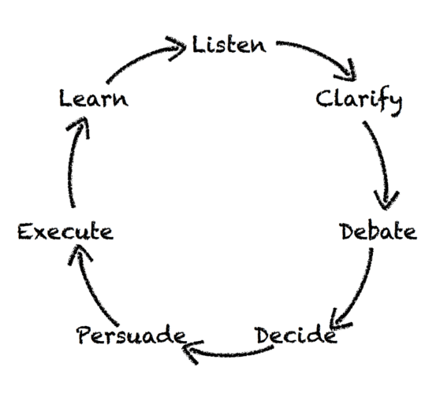

Chapter
1: The role of the boss and radically candid relationships
The responsibilities of a boss:
Providing guidance to your direct reports
Building your Team
Producing Results
Your relationships with your reports determine whether you can do
that. And they are what will give your work meaning beyond the results
you achieve
Radical Candor is a framework for building good relationships. It
consists of Caring Personally and Challenging Directly (i.e. not shying
away from hard feedback)
You have to, HAVE TO relinquish unilateral control over your team,
over decision making
Chapter
2: giving and getting feedback in a radically candid way
You want your team to criticize you, you want to be able to criticize
your team, and you want your team to be able to criticize each other.
Same for praise.
Give feedback as soon as you can, make it tangible, don’t personalize
it (make it about the action not the person).
Start by asking for feedback, then transition into giving it.
If you don’t care personally
If you care personally
If you challenge directly
Ruinous Empathy, Holding back over concern for feelings
Radical Candor
If you don’t challenge Directly
Manipulative insincerity.Looking for political advantage.Saying
their presentation was good when it wasn’t
Obnoxious aggression.Belittling, embarrassing, in public
Chapter 3:
Your teams motivations and growth trajectories
You need to understand how your direct reports work life fits into
their life goals, what motivates them
Forget potential as a measure, focus on growth trajectory
You have Rockstars and Superstars: people on gradual growth and rapid
growth trajectories
Paths are not permanent, people can switch
Low performance
Average performance
High performance: Be a partner, give focus and time
Steep growth trajectory
Wrong role? That’s your fault, fix it. If they are new to the role:
onboarding isn’t good enough? Otherwise, fire them
Push them, set the quality bar
Gradual growth trajectory
Fire them. AFTER they’ve been told their performance is poor and
given a chance to fix it.
Push them, set the quality bar
Give recognition, not promotion. Find out what is valuable to them -
bonuses, designate them as a guru, put them in charge of teaching (only
if they see that as a reward)
Chapter 4: Collaborate for
results
Don’t tell people what to do. Use the Getting Stuff Done wheel to
help your team decide what to do for themselves.
Don’t dive right into doing, cycle through the steps quickly (but
don’t skip any)

Getting Stuff Done
Listen: Embrace awkward silences. Let people fill silences,
or throw out points of view for people to push back against
Clarify: create a safe space for people to flesh out and
think through their ideas before taking it to others
Debate: a rock polisher, remove rough edges through
friction. Keep ego out of it.
Decide: not necessarily you but the best person. Make sure
they get facts, not recommendations
Persuade people who weren’t in the loop. explaining isn’t
enough, you have to sell it.
Execute: Make sure your team is blocking out time to
actually work. Make any meetings effective
Learn: be disciplined and dispassionate about admitting
mistakes.
Part 2: Tools and techniques
Chapter 5: Relationships
Sort yourself out first. If you’re not happy, you can’t build good
relationships. Find what de-stresses you and calendarize it
Always be looking for places where you can give away direct control,
to give your teams agency You build relationships away from the desk,
but in working hours: picnics, walks, coffees. (Mostly) Avoid ‘optional’
after hours stuff - it can feel mandatory Make sure you know peoples
boundaries individually, and respect them, physically and emotionally
Trust is built over time, don’t assume too much right off the bat. Start
with 1:1 meetings.
You don’t need to agree with others values, but you do need to
respect them Acknowledge others emotions, don’t ignore them, and don’t
try and manage them. Don’t tell people how to feel. Ask questions and
listen Keep a box of tissues near, but not at, your desk - the walk to
fetch them will give a useful pause if things get emotional Walk, don’t
sit, when you’re having tough conversations.
Chapter 6: giving and
soliciting feedback
Soliciting feedback
Never get defensive when you are criticised, never criticise the
criticism
You criticise your team in private, they criticise you in public.
Find the person who criticises you most and encourage them to do it in
team meetings.
Have a go to starting question. Something like ‘is there anything I
could do or stop doing that would make me easier to work with?’
Getting your team to criticize you can be hard at first. The
uncomfortable silence is your most powerful weapon. It will start off
‘everything is fine, thanks for asking’. Don’t say ‘I’m glad to hear
that’. Count to six. Ask again and again
Look for body language clues, point out when what they are at odds
with what is being said.
Clarify what was said: ‘so what I hear you saying is…’
Reward criticism, make changes as quickly as possible.
If you disagree with the criticism, find something in it to agree
with to show you’re open to it. Check for understanding, then explain
what you think. You must MUST Schedule time to talk about it again
Explicitly gauge the guidance you receive. Keep a tally of praises
and criticisms (no criticisms is bad)
Create a concrete mechanism for people to criticise: a box with a
slit, and address the items at meetings. You can phase this out as
people get better at standing up and just saying it
Never allow backstabbing, never let someone criticise someone else
behind their back. INSIST they talk to each other, in person, preferably
without you there. You can help them come up with a solution
Giving feedback
Situation, behaviour, impact: describe what you saw, what the person
did and the impact you observed. This avoids sweeping statements,
abstractions.
State your intention: “I’m going to describe a problem I see; I may
be wrong and if I am I hope you’ll tell me, if I’m not I hope my
bringing it up will help you fix it’
Finding someone else to help (like a training course) is better than
helping yourself. Just make the intro and help your DR structure the
conversation.
Give feedback immediately - in the 2-3 mins between meetings. Don’t
save it up for catchup meetings
Feedback in person is by far the best, video call is next best, then
phone. Never email or text. You need to see or hear the feedback to your
feedback, read the body language
But immediacy trumps method: if they’re in another city VC them
rather than wait a week until you see them in person
Praise in public, criticise in private. Generally.
Don’t personalise your feedback, criticise the behaviour never the
perceived personality trait
Get guidance on your guidance: just ask for it. Ask people whether
they feel you are moving towards radical candour.
Be careful about being radically candid with your boss, don’t get
yourself fired over it. Same as with your team, start by soliciting. Ask
for permission to give guidance.
There should be no surprises in a formal performance review, nothing
new for the recipeints. Start with your direct report giving feedback on
you. Write down what you’re going to say before you go in. Give it to
them, either before or during the meeting. Spend half the time looking
back, half forwards. THEY should come up with the goals. Give ratings
after you’ve talked. Give comp info after and separately - otherwise
they won’t be able to concentrate
Gender and guidance
The Abrasiveness Trap: Behaviour which is perceived as competence in
men is perceived as abrasiveness in women (by both genders)
Catch 22: women either change their behaviour and become less
effective or don’t - either way they will be less likely to be
promoted
Men manging women: don’t pull punches. Explain the radically candid
framework. Basically follow the above guidance for men and women in the
same way
Women being managed: demand criticism. Don’t be the angel of the
office to try to show you care personally: baking cookies, getting the
copies and suchlike. Don’t write men off if they fall into the trap:
point it out to them
How to avoid the Abrasiveness Trap: Imagine a man doing the same
thing and how you would react. Don’t use gendered language: abrasive,
shrill, bossy
Chapter 7: Careers and growth
Caring personally in 3 conversations
Convo 1: life story - goal: learn motivations. Get them to tell you
their life from kindergarten up. Respect boundaries, back off if
necessary. Focusing on their stories will tell you what they value and
their motivations.
Convo 2: dreams - goal: turn dreams into skills. NOT ‘long term
goals’ or ‘career aspirations’, too clinical. Don’t let it turn into a
promotion discussion. ‘What do you want the pinnacle of your career to
look like’ Turn it into a table with dreams as headers, skills as
rows.
Convo 3: an 18 month plan - how they will get the skills. This is an
intimidating step, help them take it.
Challenge directly with a growth management plan once a year
Match up individual aspirations with team goals, then have
conversations to fix misalignments
Classify people into boxes: good not great, poor but improving, poor
and not improving. Do it in 20 minutes. Get one outside perspective
Write the growth plans: give superstars tough things to stretch
them, give rockstars projects, skills to develop
For the bad who can improve: wrong role? Unclear expectations?
Training?
Bad and not improving: fire them as soon as possible.
Growth plans should not take more than 15 mins per person if you are
thinking about growth regularly enough.
Chapter
8: Results - meetings to make your team more effective
People’s time is divided between meetings and execution time. You
need to make sure the first help and don’t impede the second.
1:1’s - these are must do’s, once a week. It’s where you get to know
people, listen to them and help them clarify their ideas. They aren’t
criticism sessions - criticism is done ‘live’. Keep them informal:
coffee or lunch. The agenda is theirs to decide, but you can set
expectations (e.g does it need to be a written agenda)
Staff meetings with your direct reports: how things went last week,
share important updates, clarify decisions that need to be made (but
don’t actually debate or make the decisions)
Think time for you: block your calendar, encourage everyone to do
the same thing.
Debate meetings: where your team debates things. Clarify you won’t
make a decision here. The product of these is a summary of the facts and
issues, and a recommendation to continue the debate or have a …
Decision meeting.
Meeting free zones: make sure your team has blocked time to
execute
Walk arounds: spend an hour a week walking round and talking to
people. Get in the weeds of what they are doing, helps avoid ‘that’s
beneath me’ attitude in you and others.
Getting started - a
checklist
Explain Radical candour to your team. Do it yourself, use
stories
Start soliciting criticism use chapter 6 techniques
Start the career conversations from chapter 7
Get your 1:1s running well, get to know your team personally
ONLY THEN start giving feedback.
After a while step back and assess, make sure you’re giving and
getting good feedback
Then start staff decision and debate meetings (Chapter 8)
Start focusing on guidance between team members
Fight meeting proliferation
Start growth management plans
Start your team gauging each other’s guidance
Start expanding to other areas: hiring, firing, promotions,
performance reviews